+++
title = "İleri Dönüşüm İle Tasarım"
description=""
url="sayi-13/ileri-donusum-ile-tasarim"
aciklama="Yaratıcı yeniden kullanma olarak da bilinen ileri dönüşüm, atık olarak değerlendirilen ürünleri ve malzemeleri daha kaliteli-değerli ürünler veya malzemeler elde etme sürecidir. İleri dönüşüm, atık ürünün malzemelerinin özelliklerinin ve bazı bileşenlerinin korunmasını sağlarken ürün geliştirmeye olanak sağlar: Atılan parçalar yeni malzemeler ile birleştirilerek kalitesi ve performansı geliştirilebilir."
type="sayfa"
thumb="/img/ileri-donusum-tasarim-thumbnail.jpg"
date = "2021-09-06"
sayi=["13"]
sayfa="03"
yazar=["hilal doruk"]
tags= ["ana sayfa", "dergi"]
+++

<div class="container">
   <div class="row">
      <div class="col-md-6">
         <p>
            Yaratıcı <em>yeniden kullanma</em> olarak da bilinen
            <strong>ileri dönüşüm</strong>, atık olarak değerlendirilen ürünleri
            ve malzemeleri daha kaliteli-değerli ürünler veya malzemeler elde
            etme sürecidir.
         </p>
         <p>
            İleri dönüşüm, atık ürünün malzemelerinin özelliklerinin ve bazı
            bileşenlerinin korunmasını sağlarken ürün geliştirmeye olanak
            sağlar: Atılan parçalar yeni malzemeler ile birleştirilerek kalitesi
            ve performansı geliştirilebilir.
         </p>
         <p>
            İleri dönüştürülmüş ürünler genellikle seri üretilemez çünkü atık
            ürünün bileşenleri serileştirmek için oldukça düzensizdir.
            Tasarımcılar, sürekli yapısı olan bir malzeme seçmeli ve bu
            malzemeye sürekli erişebilmek için düzenleme yapmalıdır. [1]
         </p>
      </div>
      <div class="col-md-6">
         {{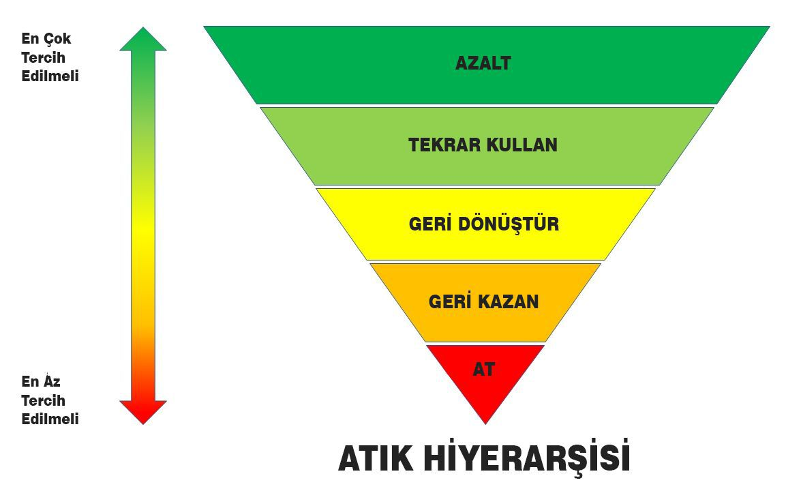}}
      </div>
   </div>
   <div class="row">
      <div class="col-md-6">
         <p>
            &quot;Birçok ileri dönüşümlü ürünün birincil işlevinin,
            yaratıcılıkla tüketici atıklarının değerleri bir ürüne nasıl
            dönüştüğünü göstererek sürdürülebilirlik konusuna vurgu yapması
            olduğu öne sürülmüştür. İleri dönüştürülmüş tasarımların, tüketici
            sonrası atıkların fiziksel olarak yönetilmesine yardımcı olmada daha
            az başarılı olduğu görülüyor.&quot;
         </p>
         <p>
            İleri dönüşümde tasarımcı, yepyeni bir ürün ortaya çıkarmak için
            yaratıcılık becerilerini malzeme bilgisiyle bir araya getirir. Bu
            pratikte süregelen ürünlere, biçimlere yeni işlevler bulmak gerekir
            ki bu da Sullivan&#39;ın &quot;Biçim, işlevi izler.&quot;
            <em>akışının</em> tersidir. [2]
         </p>
      </div>
      <div class="col-md-6">
         {{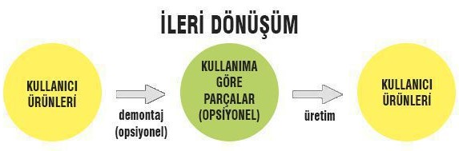}}
         <blockquote>
            <p>
               &quot;İster süzülen kartal, ister açmış elma çiçeği, toprağı
               süren beygir, şen kuğu, dallanan meşe, dolambaçlı dere, güneşin
               tüm akışının üzerinde sürüklenen bulutlar...
               <strong>Biçim her zaman işlevi izler, kural budur.</strong>&quot;
               -Louis Henry Sullivan
            </p>
         </blockquote>
      </div>
   </div>

   <p>
      İleri dönüşümle hala atık ürettiğimizden <em>hafifletici</em> bir
      çözümdür. Tasarımcılar ürünleri tasarlarken kullanım sonrasında ürünlerden
      mümkün olan en iyi değeri elde edecek şekilde ürünün ömrünün sonunu da
      tasarlamalıdır. Bu sayede atık ile ne yapılacağı da netlik kazanır;
      &quot;atık&quot; kavramı elimine edilebilir. [1]
   </p>
   <hr />
   <div class="row">
      <div class="col-md-6">
         <div class="bg-grey p-md-5">
            <p>
               &quot;Al-yap-at&quot; formundaki doğrusal ekonomiden &quot;ödünç
               al-kullan-geri ver&quot; formundaki döngüsel ekonomiye geçiş
               gereklidir. Döngüsel ekonomi, sıfır atık veya beşikten beşiğe
               (cradle to cradle) ekonomisi olarak da anılır.
            </p>
         </div>
         <blockquote>
            <p>
               “Döngüsel Ekonomiye geçmezsek, gezegen için oyun biter; toplum
               için oyun biter”
            </p>
         </blockquote>
      </div>
      <div class="col-md-6">
         {{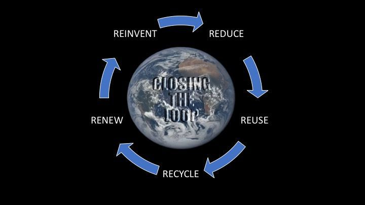}}
         <small>Filmi <a href="https://youtu.be/6g0AYbEoOGk" target="_blank" rel="noopener noreferrer">Youtube'dan izleyebilirsiniz. ↗</a> </small>
      </div>
   </div>

   <hr />

   <h2 id="1-jurgen-bey-droog">1. Jurgen Bey - Droog</h2>
   <h3 id="tree-trunk-bank" class="text-success m-1">Tree-Trunk Bank</h3>
   <div class="row">
      <div class="col-md-6">
         <p>
            Jurgen Bey, devrilmiş bir ağacın gövdesine bronz döküm antik
            sandalye sırtlarının sıkıştırıldığı bankı Oranienbaum parkı için
            tasarladı.
         </p>
         <p>
            Jurgen Bey, ağaçların yerel olarak erişilebilir olduğu yerlere
            ağaçları taşımanın gülünç olduğunu belirtiyor. Bu nedenle sadece
            koltuk arkalıkları satılıktır.
         </p>
      </div>
      <div class="col-md-6">
         {{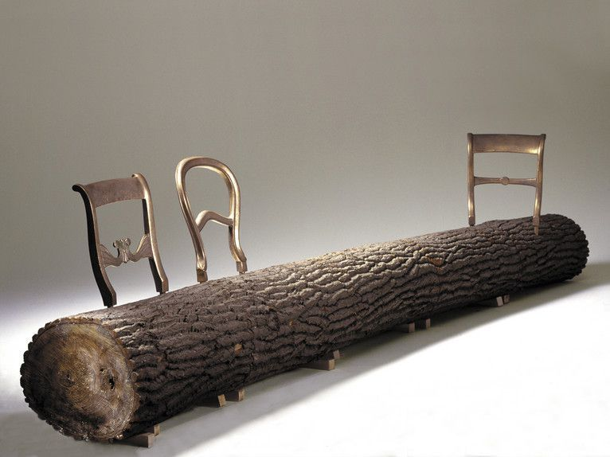}}
      </div>
   </div>

   {{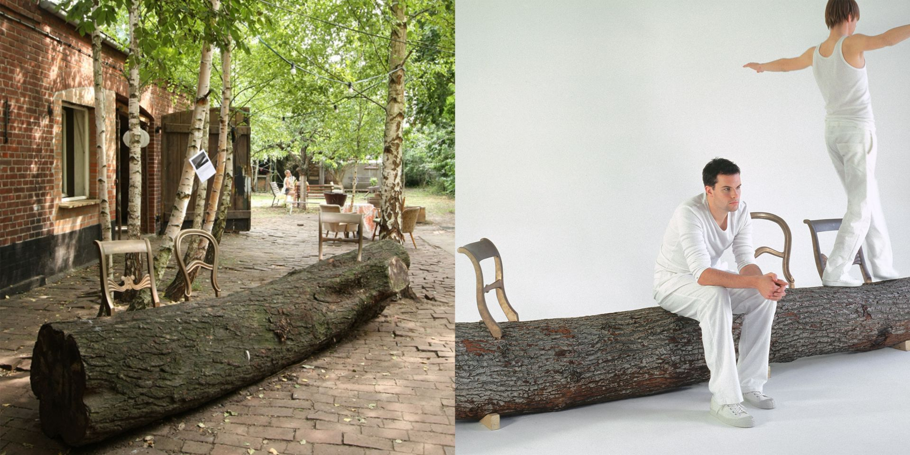}}

   {{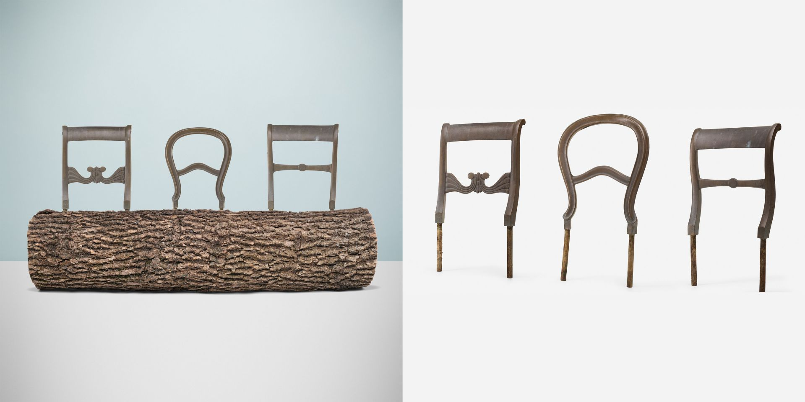}}
   <hr />
   <h2 id="2-anna-borman">2. Anna Borman</h2>
   <h3 id="reline-beyaz-seramik" class="text-success m-1">
      Reline Beyaz Seramik
   </h3>
   <div class="row">
      <div class="col-md-6">
         <p class="text-justify">
            Reline sofra takımı terk edilmiş, atılmış beyaz seramikten rastgele
            bardak, tabak-çanak parçalarını yeniden kullanarak bir tek pembe
            çizgi ile &quot;takım&quot; haline getirir. Bu basit çizgi parçanın
            birçok açısından görünecek konumdadır. Çizgilerin başlangıç ve bitiş
            konumlarına &quot;geri dönüşüm&quot; simgesi de eklenmiştir. Tüm
            parçalar benzersiz ama uyumludur.
         </p>
      </div>
      <div class="col-md-6 text-right">
         {{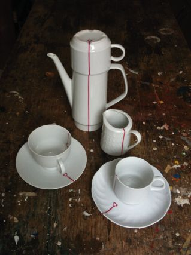}}
      </div>
   </div>

   {{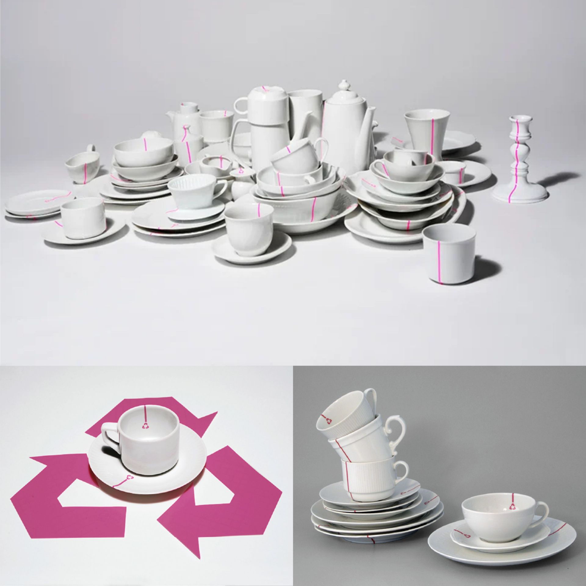}}

   <hr />
   <h2 id="3-tobias-rockenfeld---droog">3. Tobias Rockenfeld - Droog</h2>
   <h3 id="creatures---yaratıklar" class="text-success m-1">
      Creatures - Yaratıklar
   </h3>
   <p>
      Özellikle çocukları atık malzemelerle yapılabilecekleri keşfetmeye teşvik
      etmek amacıyla tasarladığı bu koleksiyondaki yaratıklar doğadan, evden,
      çöpten gelen diğer malzemelerle birlikte parçalara ayrılmış eski ve kırık
      oyuncaklardan yapılmıştır.
   </p>
   <p>
      &quot;Yüzebilen, ışıklarını açıp kapatabilen, araba kullanabilen,
      uçabilen, havada durabilen, emekleyebilen, kuş tüyü çırpabilen, dans
      edebilen ve gülebilen 18 eşsiz Yaratık!&quot;
   </p>

   {{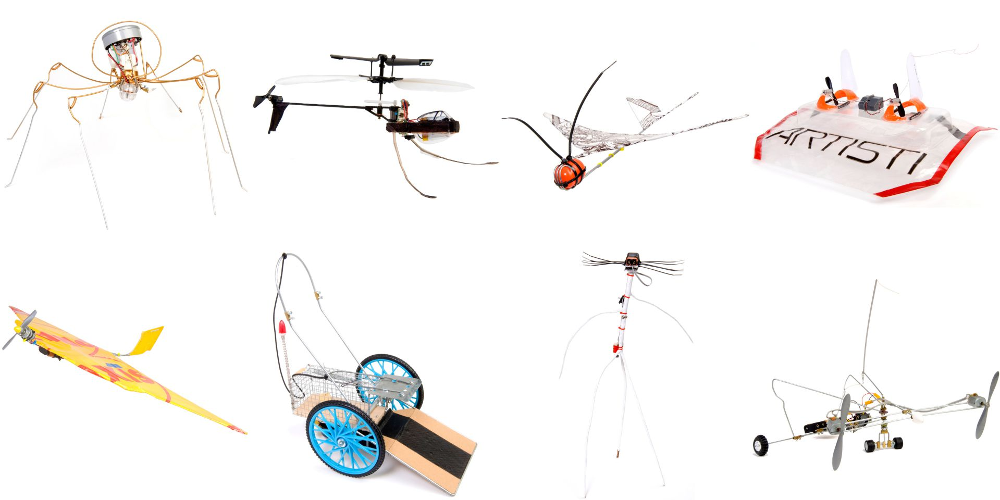}}

   <hr />
   <h2 id="4-oki-sato---nendo">4. Oki Sato - NENDO</h2>
   <h3 id="cabbage-sandalye" class="text-success m-1">Cabbage Sandalye</h3>
   <div class="row">
      <div class="col-md-6">
         <p>
            Lahana Sandalye 21_21 Design Sight&#39;ın 1.yılı için düzenlenen bir
            sergi için küratör ve moda tasarımcısı Issey Miyake&#39;nin isteği
            üzerine tasarlandı:
            <em
               >pileli kumaş üretimi sırasında büyük miktarlarda üretilen ve
               genellikle istenmeyen bir yan ürün olarak terk edilen pileli
               kağıttan mobilya.</em
            >
         </p>
         <p>
            Asıl kağıt üretim sürecinde eklenen reçineler ile güç kazanan kağıt
            kumaş aldığı formu hatırlayabilmesi ile pileler-kıvrımlar sandalyeye
            esneklik ve yumuşaklık katar.
         </p>
         <p>
            Moda tasarımcısı Issey Miyake&#39;nin de tasarımlarının çoğunda
            kullanılan kumaşın rulosunun katmanları eklenen reçinelerle esnek
            hale getirildiğinde bu sert kağıt &quot;doğal&quot; görünüm
            kazanıyor.
         </p>
      </div>
      <div class="col-md-6">
         {{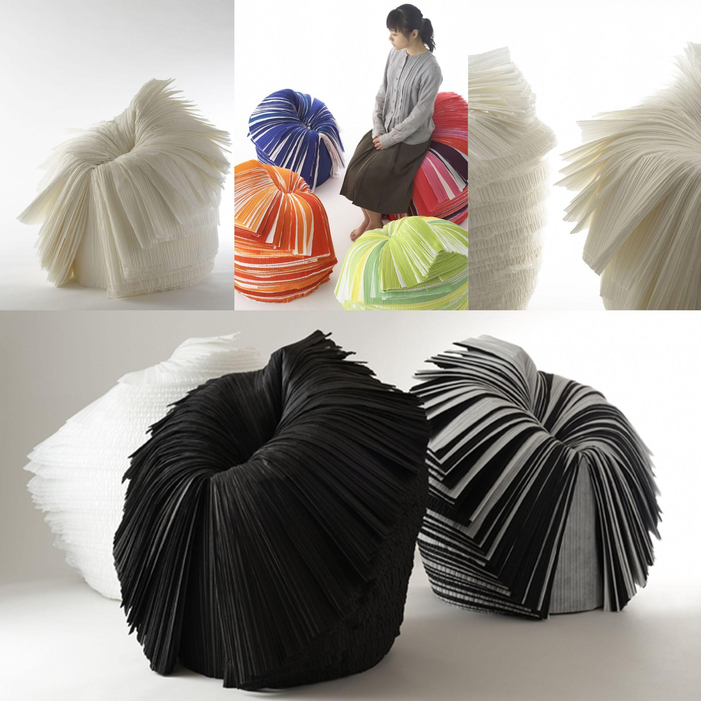}}<small>
            Nendo, 30 Mart - 6 Temmuz 2008 tarihleri arasında Tokyo&#39;da 21_21
            Design Sight&#39;ta gerçekleşecek olan Issey Miyake&#39;nin
            küratörlüğünü yaptığı XXIst Century Man sergisi için
            <strong>Oki Sato</strong> tarafından Lahana Sandalyesi tasarlandı.
         </small>
      </div>
   </div>

   <div class="row">
      <div class="col-md-4">
         <p>
            Sandalye, kumaşlar rulo haline getirilerek çivi ve vida
            kullanılmadan üretildiğinden bu basit üretim süreci, dağıtımı da
            basitleştirdi. Kullanıcıya kompakt rulo kumaş olarak gönderilip,
            kullanıcının evde katları kesip açarak sandalyenin üretim sürecine
            katılması Ikea efekti yaratıyor. Üretim ve dağıtım maliyetleri
            oldukça düşük olan bu &quot;ilkel&quot; tasarım istenmeyen yan
            ürünleri kullanarak &quot;21.yüzyıl insanı&quot;nın çevresel
            kaygılarını yatıştırıyor.
         </p>
      </div>
      <div class="col-md-8">
         {{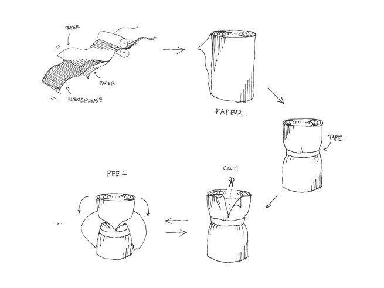}}
      </div>
   </div>

   {{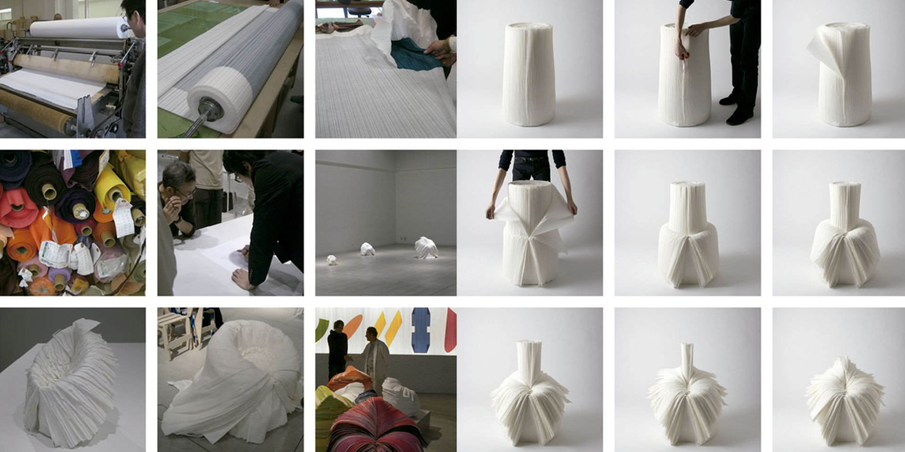}}
   <small>
      Kağıt bir silindir şeklinde sarılır ve katmanların birer birer
      soyulabilmesi için bir tarafı dikey olarak yarıya kadar kesilir.
   </small>

   <hr />
   <h2 id="5-jos-van-der-meulen">5. Jos van der Meulen</h2>
   <h3 id="kağıt-torba" class="text-success m-1">Kağıt Torba</h3>
   <div class="row">
      <div class="col-md-6">
         <p>
            Paperbag Klasik, Goods isimli Hollandalı tasarım markası için Jos
            van der Meulen tarafından tasarlandı. Bu çevre dostu dayanıklı kağıt
            torbalar kullanılmayan reklam afişlerinden Meulen tarafından
            atölyesinde üretildi.
         </p>
         <p>
            Jos van der Meulen, gündelik atık ürünlere yeni işlevler
            kazandırarak tasarladığı yeni tüketici ürünleriyle tanınır.
            Malzemeleri yeni, farklı uygulamalarda kullanmak üzere özelliklerini
            araştırır.
         </p>
      </div>
      <div class="col-md-6">
         {{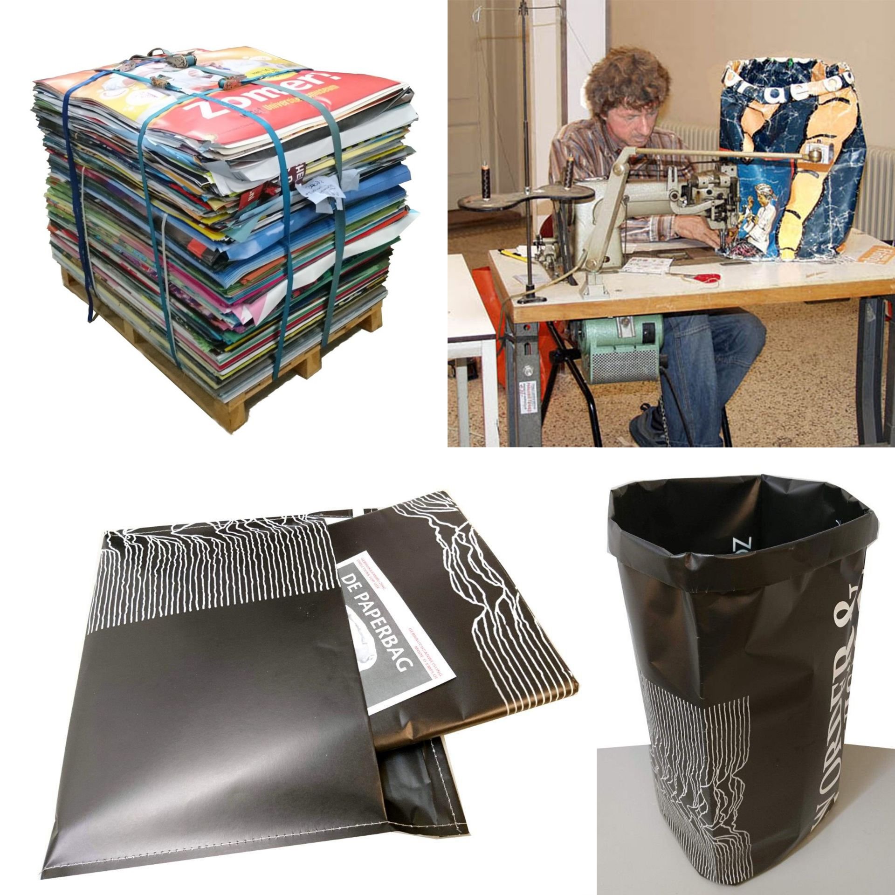}}
      </div>
   </div>
   <div class="row">
      <div class="col-md-6">
         {{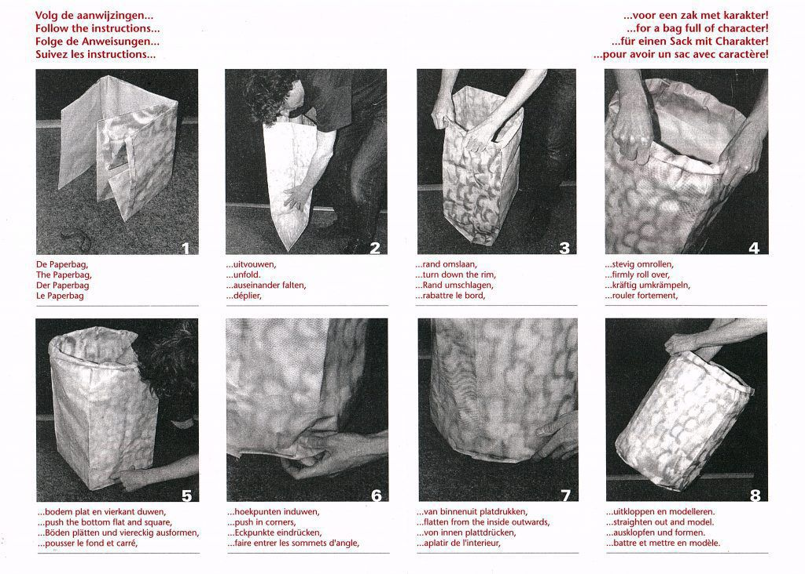}}
         <small>
            Kağıt Torba katlanmış olarak teslim edilir ve ekteki talimatlara
            göre kolayca açılabilir. Sağlam bir çöp kutusu, küçük bir çamaşır
            sepeti...
         </small>
      </div>
      <div class="col-md-6">
         {{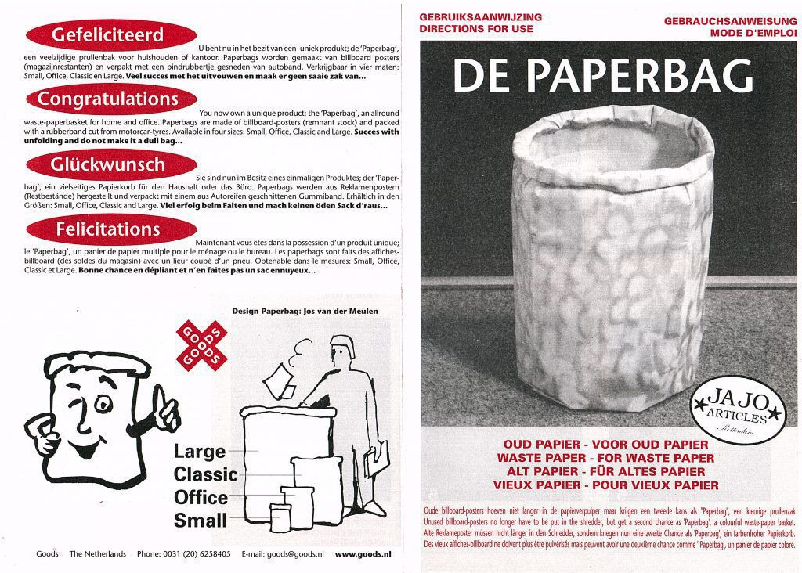}}
      </div>
   </div>

   <hr />
   <h2 id="6-tejo-remy">6. Tejo Remy</h2>

   <p>
      Tejo Remy, Hollanda&#39;da <strong>Rene Veenhuizen</strong> ile birlikte
      ürün, iç mekan ve kamusal alan tasarımcısı olarak çalışıyor. Her şeyi
      malzemesi olarak gören Remy, mevcut bilgileri, şartları ve ürünleri
      <em>toplumsal irtibatı</em> artıracak veya bir <em>hikaye</em> anlatacak
      ve çevresi ile var olan yeni hallere dönüştürür.
   </p>
   <h3 id="süt-şişesi-lambası" class="text-success m-1">Süt Şişesi Lambası</h3>
   <p>
      Şişeler tıpkı küfelere dizildiği gibi konumlanmıştır: bir düzine. Süt
      Şişesi Lambası, MoMA New York City ve San Francisco Modern Sanat Müzesi
      dahil olmak üzere çok sayıda müze koleksiyonunda yer almaktadır.
   </p>

   {{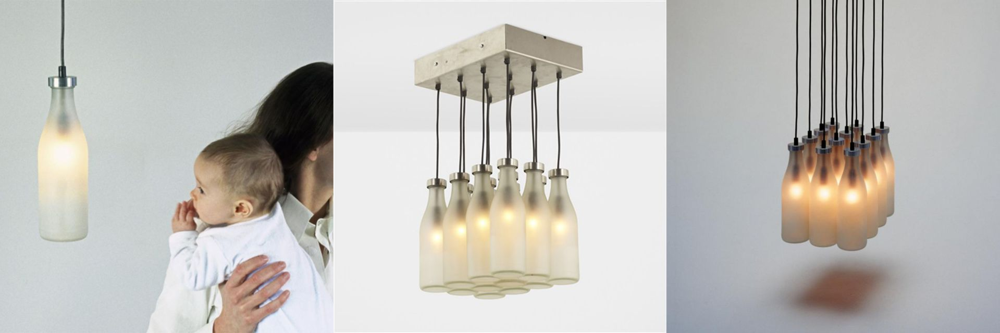}}
   <small>
      Süt Şişesi Lambası (Milkbottle Lamp): 12 süt şişesi, 15W ampul
      (110V), paslanmaz çelik.
   </small>
   <div class="bg-grey p-md-5">
      <p>
         Tejo Remy, <em>Droog</em> ile Felemenk Kavramsal Tasarım Akımı&#39;nın
         öncülerindendir. Atık kumaşlardan Rag Sandalye, atık çekmecelerden ise
         Chest of Drawers (<em>Kaotik</em> Şifonyer) gibi önemli tasarımları
         vardır.
      </p>
   </div>
   <hr />
   <h4>Bonus:</h4>
   <p>
      {{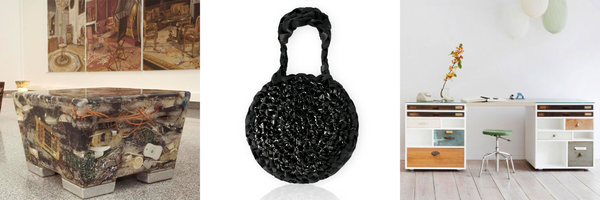}}
   </p>
   <p>
      <strong class="text-danger">Soldan sağa: N+ew, Retape, SchubLaden.</strong
      ><br />
      <strong>N+ew</strong>, WEEE (waste electrical and electronic equipment)
      yani atık elektrik ve elektronik ürünlerden oluşan bir oturma elemanı
      enstalasyonudur. <strong>Retape</strong>, analog teknolojinin yerini
      dijitalin almasıyla eski kasetler artık neredeyse hiç kullanılmıyor. Bu
      kullanılmış kasetler ile manyetik bantlarla yapılan denemeler sonucunda el
      çantası, laptop, telefon, gözlük çantaları gibi aksesuarları Lucrecia
      Lovera tasarladı. <strong>SchubLaden</strong>, kullanılmış çekmeceleri
      tamir etme, zımparalama, boyama, cilalama gibi işlemlerden geçirerek
      bunlara uygun kasalar tasarlayıp bu çekmeceleri yeniden kullanarak
      değerlendirdi.
   </p>
   <hr />
   <blockquote>
      <p>
         &quot;İyi yönlendirilmiş bir hayal gücü, büyük işlerin
         kaynağıdır.&quot; Çin Atasözü
      </p>
   </blockquote>

   <br><br>
   <button
   class="btn markutbtn"
   data-target="#my-collapse"
   data-toggle="collapse"
   aria-expanded="false"
   aria-controls="my-collapse"
   >
   Kaynaklar
   </button>
   <div id="my-collapse" class="collapse">
   <pre> <small><code>  
      1. ORDONEZ, Isabel, 2-RAHE, Ulrike, How Design relates to Waste: A Categorization of Concrete Examples, https://publications.lib.chalmers.se/records/fulltext/166772/local_166772.pdf https://www.semanticscholar.org/paper/How-Design-relates-to-Waste-%3A-A-Categorization-of-Pizarro-Rahe/7c712aa6f72f16f7f7e0ea00ba2539586ccef1d4
     
      2. CRABBE, Anthony (2012) Upcycling: Where function follows form, in Israsena, P., Tangsantikul, J. and Durling, D. (eds.), Research: Uncertainty Contradiction Value - DRS International Conference 2012, 1-4 July, Bangkok, Thailand. https://dl.designresearchsociety.org/drs-conference-papers/drs2012/researchpapers/29
     
      3. ALI, Nawwar Shukriah 2- KHAIRUDDIN, Nuur Farhana 3- ZAINAL ABIDIN, Shahriman, *"Upcycling: Re-Use and Recreate Functional Interior Space Using Waste Materials"*, https://www.researchgate.net/publication/269932497_Upcycling_Re-use_and_recreate_functional_interior_space_using_waste_materials https://www.designsociety.org/publication/34808/Upcycling%3A+re-use+and+recreate+functional+interior+space+using+waste+materials
     
      4.  McDonough 2- Braungart 3- Clinton, *The Upcycle: Beyond Sustainability-Designing for Abundance*. 2013.
     
      5. ORDONEZ, Isabel, 2- KHAN, Amaltas, 3- TANDON, Puneet, 4- REXFELT, Oskar, Designing with Waste: Comparison of Two Practice-Based Education Cases, 2016. https://www.designsociety.org/publication/39059/DESIGNING+WITH+WASTE%3A+COMPARISON+OF+TWO+PRACTICE-BASED+EDUCATION+CASES
     
      6. ABOUELSOUD, Aziza, *"Waste Design Using Experimental Design Techniques"*, Journal of Design Sciences and Applied Arts 1(1):116-124, 2021 https://jdsaa.journals.ekb.eg/article_70457_438fe27c4d06a25a4f0db4d8f065c7bf.pdf https://www.researchgate.net/publication/349121047_Waste_Design_using_Experimental_Design_techniques
      
      7.  REXFELT, Oskar, 2- ORDONEZ, Isabel, 3- RAHE, Ulrike, "*From Industrial Waste to Product Design"* https://www.academia.edu/11654792/From_Industrial_Waste_to_Product_Design https://publications.lib.chalmers.se/records/fulltext/167723/local_167723.pdf
      
      https://greenempowermentproject.weebly.com/thoughts/what-is-upcycling-how-is-it-different-from-recycling
      
      https://www.inexhibit.com/case-studies/design-recycling-vs-upcycling-whats-the-difference/
      
      https://intercongreen.com/2010/02/17/recycling-vs-upcycling-what-is-the-difference/
      
      https://www.fmlink.com/articles/missing-link-sustainable-reuse-recycling-building-products/
      
      https://mcdonough.com/cradle-to-cradle/
      
      http://www.closingtheloopfilm.com/
      
      https://www.smow.com/blog/2014/07/unter-zwischen-im-ampelhaus-oranienbaum/
      
      https://www.droog.com/?s=waste+material
      
      https://www.droog.com/product/tree-trunk-bench/
      
      https://www.droog.com/projects/tree-trunk-bench-by-jurgen-bey/
      
      https://www.wright20.com/auctions/2020/10/champion-100/130
      
      https://www.lauritz.com/en/auction/juergen-bey-three-bronze-casts-of-back-rests-of-a-tree-trunk/i5084353/
      
      https://www.droog.com/projects/couleur-locale-for-oranienbaum-cultural-foundation-dessau-wa¶rlitz/
      
      http://www.bormannundserman.de/
      
      https://www.designboom.com/project/reline/
      
      https://www.core77.com/posts/22754/ReLine-Recycled-Tableware-by-Anna-Bormann
      
      https://www.droog.com/projects/creatures-by-tobias-rockenfeld/
      
      https://www.nendo.jp/en/works/cabbage-chair-2/
      
      https://www.moma.org/collection/works/120941
      
      https://www.dezeen.com/2008/03/06/cabbage-chair-by-nendo/
      
      https://www.artic.edu/artworks/213149/cabbage-chair
      
      http://www.josvandermeulen.nl/product/259/
      
      https://www.smukdesign.nl/en/winkel/brands/goods-en/paperbag-classic-paper-trash-can-jos-van-der-meulen/
      
      https://www.moma.org/collection/works/3582
      
      https://www.droog.com/product/rag-chair/
      
      https://www.artsy.net/artwork/tejo-remy-rag-chair-1
      
      http://www.remyveenhuizen.nl/work/furniture/ragchair
      
      https://maddiecava101102.wordpress.com/2017/03/17/tejo-remy/
      
      https://www.droog.com/product/chest-of-drawers/
      
      https://www.moma.org/collection/works/3578
      
      http://www.remyveenhuizen.nl/work/furniture/chest-drawers-you-cant-lay-down-your-memory
      
      http://www.artnet.com/artists/tejo-remy-and-rene-veenhuizen/milk-bottle-lamp-JLoa6Wjizwk4PcD_ImZm4A2
      
      http://www.remyveenhuizen.nl/work/products/milkbottle-lamp
      
      https://www.droog.com/product/milk-bottle-lamp-single/
      
      https://www.stardust.com/droogmilkbottle.html
      
      
      bonuslar:
      
      http://ralonso.com/?portfolio=new-2&lang=en
      
      http://www.retape.de/?page_id=19
      
      http://www.lucrecialovera.com/
      
      https://www.schubladen.de/moebel/
     </code></small></pre>
   </div>
</div>
